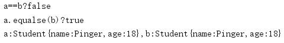
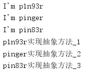

基本数据类型不具备“对象”的特性，它没有属性，没有方法。为了解决这个问题。Java提供了包装类为8种基本数据类型的分别定义了相应的引用类型，并称之为基本数据类型的 包装类 ，对应关系如下表：
| 基本数据类型 | 包装类 |
|---|---|
| byte | Byte |
| short | Short |
| int | Integer |
| long | Long |
| float | Float |
| double | Double |
| char | Character |
| boolean | Boolean |
parse() 方法来将一个字符串转换为相应包装类的对象。xxxValue() 方法来实现。parseXxx() 方法，传入的参数为可转换的字符串；调用对象包装类的构造器，传入可转换的字符串。valueOf() 方法，传入的参数为包装类对象；将包装类对象与 "" 相加。compareTo()方法。当我们通过 System.out.println() 来打印一个对象时，实际上我们打印的是对象调用其 toString() 方法后的字符串。但我们将一个对象与字符串相加时，其实也是对象调用其 toString() 方法后返回的字符串与被加的字符串相加。如果我们没有为一个类重写其 toString() 方法，那么默认继承自Object类的 toString() 会返回：类名+@+hashCode 形式的字符串。所以想要打印对象，需要重写其 toString() 方法。
equals() 方法，将根据自己定义的比较规则进行比较，否则和 “==” 方式的比较是一样的。一个综合的例子如下：
package com.test;
public class Student {
private String name;
private int age;
@Override
public boolean equals(Object obj){
if(obj==this){
return true;
}else{
if(obj!=null&&obj.getClass()==this.getClass()){
Student studentObj=(Student)obj;
//可以看到，类内的方法可以直接无限制的访问其属性
if (studentObj.getAge()==this.age&&studentObj.getName().equals(this.getName())){
return true;
}
}
}
return false;
}
@Override
public String toString(){
return "Student{"+
"name:"+name+
",age:"+age
+"}";
}
public String getName() {
return name;
}
public void setName(String name) {
this.name = name;
}
public int getAge() {
return age;
}
public void setAge(int age) {
this.age = age;
}
public static void main(String[] args){
Student a=new Student();
Student b=new Student();
a.setAge(18);
b.setAge(18);
a.setName("Pinger");
b.setName("Pinger");
System.out.println("a==b?"+(a==b));
System.out.println("a.equalse(b)?"+(a.equals(b)));
System.out.println("a:"+a+",b:"+b);
}
}运行的结果如下图所示：

一个单例类的例子如下：
package com.test;
public class SingeltonExample {
//懒汉模式
private static SingeltonExample cash=new SingeltonExample();
//构造器私有化
private SingeltonExample(){}
//提供一个静态的用于返回单例类对象的方法
public static SingeltonExample getInstance(){
return SingeltonExample.cash;
}
public static void main(String[] args){
//下面的语句能够通过编译并能正确执行
SingeltonExample a=SingeltonExample.getInstance();
System.out.println(a);
}
}从语义上来讲，被final修饰的东西表示不能再被变化，不能再被修改。具体而言，被final修饰的类不能再被继承，被final修饰的变量的初始值不能再变化，被final修饰的形参不能再变化。
final有一个常见的误区：被final修饰的引用类型变量，其引用变量的值其实是指向对象的地址，这个就是这个变量的初始值，不可改变，但是 引用的对象却是可以改变的 。
一般思维，如果类的成员变量没有初始值，那么系统会自动给其赋值，但是如果我们不给成员变量赋初始值，又给其final修饰符，那么这个成员变量如果被系统赋初始值，又不能被修改，那么这个成员变量还有什么意义呢？所以，系统不会对final修饰的成员变量进行隐式初始化， final修饰的成员变量必须程序员显示赋值 ，赋值规则如下：
一般思维，系统不会对局部变量进行隐式初始化，所以当我们定义final修饰的局部变量时， 可以在定义该变量时给定初始值，也可以不指定默认值 ，如果定义final修饰的局部变量没有给定初始值，那么可以在后面的代码中给该变量赋初始值，但是只能有一次。
当final修饰变量（无论类变量，实例变量还是局部变量）在定义时就给定了初始值，并且编译期间就可以确定此初始值，那么此变量相当于一个直接量 ，一个例子如下：
//下面两个fianl修饰的变量都是相当于直接量，所以两个直接量相加还是直接量
//相加后的直接量指向字符串池中缓存的"哀吾生之须臾，羡长江之无穷。";
//c也是指向那个字符串，所以两者相等。
final String a="哀吾生之须臾，";
final String b="羡长江之无穷。";
String c="哀吾生之须臾，羡长江之无穷。";
//输出true
System.out.println(a+b==c);当希望子类不要重写父类的某些方法时，可以把这些方法用final修饰。此外一个易错的点： 父类用private final修饰的方法，子类虽然”重写”了此方法，但是不报错？原因是子类其实那不算重写，那算自己扩展的方法。
为了让某些类不能被继承，可以用final修饰这个类。
不可变类就是此类的实例的属性不可改变，常见的java.lang.String类就是不可变类。一般思维，创建不可变类有如下几个步骤：
但是这样有一个致命的缺陷，如果类的属性是一个引用类型的变类，那么此引用变类的对象还是可以变化，就不算一个成功的不可变类，一个例子如下：
类定义如下：
public class ImmutableClass {
private final Address addr;
public ImmutableClass(Address addr){
this.addr=addr;
}
public Address getAddr(){
return this.addr;
}
}
class Address{
private String province;
private String city;
public Address(String province, String city) {
this.province = province;
this.city = city;
}
public String getProvince() {
return province;
}
public void setProvince(String province) {
this.province = province;
}
public String getCity() {
return city;
}
public void setCity(String city) {
this.city = city;
}
}对以上的ImmutableClass类进行测试：
//讲address对象作为实参传给Address类构造器的形参addr
//这个传递过程是一个严格的值传递，address传给addr的是对象的地址，所以两个都会指向同一个对象
//所以address引用变量和addr引用变类都可以改变对象的值
Address address=new Address("湖南","衡阳");
ImmutableClass immutableClass=new ImmutableClass(address);
//此时打印的是湖南
System.out.println(immutableClass.getAddr().getProvince());
//此时改变immutableClass对象的属性addr的province
address.setProvince("贵州");
//此时打印贵州，显然，此不可变类是失败的
System.out.println(immutableClass.getAddr().getProvince());改进后的不可变类如下：
public class ImmutableClass {
private final Address addr;
public ImmutableClass(Address addr){
this.addr=new Address(addr.getProvince(),addr.getCity());
}
public Address getAddr(){
return new Address(this.addr.getProvince(),this.addr.getCity());
}
}这样进行实例化时，传进去的引用对象的属性是啥样，传出来也是啥样，外界引用对象改变不影响类内的引用对象的属性。
用abstract修饰的类为抽象类， 抽象类不能被实例化，抽象类的构造器不是用来创建实例的，而是用于给子类调用的 。由于fianl修饰的类不能被继承，但是abstract修饰的类只能被用来继承，两者矛盾，所以fianl和abstract不能同时出现（修饰方法时也一样）。此外， 一个类，如果有抽象方法，此类只能被定义成抽象类；如果一个类继承一个抽象类，但是没有完全实现其抽象方法，或者一个类实现了一个接口，但是没有完全实现其抽象方法，此类也只能被定义成抽象类
用abstract修饰的方法为抽象方法，抽象方法有如下知识点：
定义接口的基本语法如下：
[修饰符] interface 接口名 extends 接口0,接口1,...{
零到多个常量...
零到多个抽象方法...
}可以看到，一个接口可以有多个直接的父接口，但 接口只能继承接口，不能继承类 ，此所谓Java的变相多继承 。此外，接口有三自动：
实现接口用implements关键词。一个类可以同时继承一个父类，实现多个接口，但是implements放在extends后面，此时如果这个类没有实现接口的全部抽象方法或者抽象类的所有方法，此类只能被定义成一个抽象类。 实现接口时，必须使用public访问控制修饰符，因为接口的方法都是public权限的，而重写方法的访问权限只能更大
其实只要记住接口是一个纯粹的用于被实现的标准，就可以很好理解接口的一些特性：不能包含有实现了方法体的方法，只能有静态常量等等。
一般思维，把一个类的定义放在另一个类内，这个在内部的类就是 内部类，包含内部类的类称为 外部类。
首先理解成员内部类，成员内部类的和成员变量一样，定义在类内，方法之外。所以局部内部类和匿名内部类不是成员内部类。成员内部类分为两种：静态内部类和非静态内部类。使用static修饰的成员内部类为静态内部类，是类相关的；不适用static修饰的成员内部类是非静态内部类，是实例相关的， 其存在依赖于外部类对象 。此外，非静态成员内部类可以直接调用外部类的实例变量。一个子例如下：
代码如下：
public class Class_0 {
//外部类实例变量
private String name="pinger";
//定义一个非静态成员内部类
public class Inner_0{
public String name="P1n93r";
public void say(){
System.out.println("I'm "+this.name);
//Class_0.this指代当前外部类对象
System.out.println("I'm also "+Class_0.this.name);
}
}
//测试非静态成员内部类
public static void main(String[] args){
Class_0.Inner_0 inner=new Class_0().new Inner_0();
inner.say();
}
}执行结果如下图：
还有以下两个注意点：
一般思维，静态内部类属于外部类本身，不属于某个实例，所以静态内部类也称为 类内部类。使用static修饰的成员内部类为静态内部类。 静态内部类只能访问外部类的类成员，不能访问其实例成员。
局部内部类就是写在方法里的内部类，和局部变量一样，仅仅在方法里有效。 由于 所有的局部成员都不能有访问控制修饰符 ，所以局部内部类也就不能用static和pulic等修饰。
一般思维，没有名称的内部类为匿名内部类。匿名内部类的一般使用场景是需要一次性使用的类时，可以创建匿名内部类。 创建匿名内部类的时候会立即创建一个该类的实例，这个类定义立即消失，匿名内部类不同重复使用。 匿名内部类的定义格式如下：
new 抽象父类(实参列表)|实现接口(){
//匿名内部类的实体部分
}可以看到，匿名内部类必须继承一个抽象父类或者实现一个接口，此外，不同同时继承抽象父类又实现接口。匿名内部类的其他常见知识点如下：
通过上面非静态内部类的例子，可以看到，创建非静态内部类对象的时候，需要一个外部类对象，所以在外部类意外的地方创建内部类对象的语法格式为： new OutterClass().InnerClass() ，在外部类内的话，由于内部类可知，所以直接 new InnerClass() 就好。此外还有一个关于成员内部类的继承问题，一个继承的例子如下：
包含一个内部类的外部类代码如下：
package com.test.InnerClass;
public class Class_1 {
public class Inner_1{
{
System.out.println("我是非静态内部类父类~");
}
}
//此内部类的子类写在外部类内
public class InnerSon_1 extends Inner_1{
{
System.out.println("我是非静态内部类子类1");
}
}
}写在外部类外的一个内部类子类代码如下：
package com.test.InnerClass;
class InnerSon extends Class_1.Inner_1{
//这个out对象就是外部类对象，通过外部类对象在构造器内调用super()方法，就是通过外部类对象调用父类构造器
public InnerSon(Class_1 out){
out.super();
}
}可以看到，成员非静态内部类的子类写在外部类的外面和里面是不一样的。写在外面，系统不会自动帮我们在构造器内调用父类构造器，所以需要我们手动用外部类对象调用父类构造器。
枚举类使用enum关键字声明，一个Java源文件最多只能定义一个public访问权限的枚举类，且该Java源文件的的文件名也必须和枚举类的类名相同。枚举类有如下特点：
一个综合例子如下：
package com.test.enumerate;
//定义一个接口
interface Interface1{
String say();
}
//定义一个抽象枚举类
public enum EnumOne implements Interface1 {
p1n93r("阿淦"){
public String getName(){
return this.name()+"实现抽象方法_1";
}
public String say(){
return "I'm "+this.name();
}
},pinger("皮皮GIAO"){
public String getName(){
return this.name()+"实现抽象方法_2";
}
public String say(){
return "I'm "+this.name();
}
},pin83r("淦皮"){
public String getName(){
return this.name()+"实现抽象方法_3";
}
public String say(){
return "I'm "+this.name();
}
};
private String name;
private EnumOne(String name){
this.name=name;
}
//一个抽象方法
public abstract String getName();
public static void main(String[] args){
EnumOne p1n93r=EnumOne.valueOf(EnumOne.class,"p1n93r");
EnumOne pinger=EnumOne.valueOf(EnumOne.class,"pinger");
EnumOne pin83r=EnumOne.valueOf(EnumOne.class,"pin83r");
System.out.println(p1n93r.say()+"\n"+pinger.say()+"\n"+pin83r.say());
System.out.println(p1n93r.getName()+"\n"+pinger.getName()+"\n"+pin83r.getName());
}
}main方法运行结果如下图：

其实上面的枚举类是一个抽象类（定义了抽象方法），而类内首行的各个枚举值其实是创建各个本枚举类的匿名子类实例（定义匿名内部类的同时就会创建匿名对象）。所以需要实现本枚举类的抽象方法，也要实现枚举类实现的接口的方法。